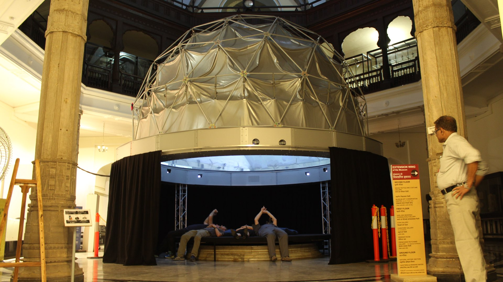

x
Akshay Kore | Portfolio
Lookup Mumbai
Research internship for an immersive installation with Ar. Preeti Sanghi (JSW Foundation) in collaboration with Sarah Kenderdine at The Chhatrapati Shivaji Maharaj Vastu Sangrahalaya (CSMVS) in Mumbai, formerly known as the Prince of Wales Museum.
The internship involved research and fieldwork for a fulldome new media installation at the CSMVS Museum. I was responsible for the design and fabrication of certain parts of the installation along with the background research of buildings, photography permissions for a number of buildings in Mumbai that were to be documented. 360 Degree images of buildings in Mumbai with noteworthy ceilings were taken and projected on a fulldome to create an immersive experience.

Immersive, New media, Visualization, Research, Museum, CSMVS, Mumbai, Fieldwork, Lookup, Ceilings, JSW Foundation, Sarah Kenderdine, Preeti Sanghi, Architecture, Exhibition, Installation, The Chhatrapati Shivaji Maharaj Vastu Sangrahalaya, Prince of Wales Museum
<< Previous
Next >>
This work by Akshay Kore is licensed under a Creative Commons Attribution-ShareAlike 4.0 International License